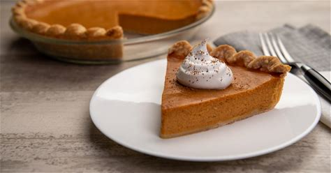

LIBBY'S Famous Pumpkin Pie
Looking for the perfect classic pumpkin pie for this holiday season? You've found it with our best pumpkin pie
recipe.This traditional and easy pumpkin pie recipe, featured on LIBBY'S Pumpkin labels sinces 1950, ensure a
delicious homemade taste.Simply mix, pour, and bake for a slice of perfection.

Submitted by Nestle Toll House
PrepTime:
10 mins
Cook time:
55 mins
Total Time:
1hr 5mins
Servings:
8
Yield:
1(9-inch) deep-dish pie
INGREDIENTS
3/4 cup granulated sugar
1 teaspoon ground cinnamon
1/2 teaspoon salt
1/2 teaspoon ground ginger
1/4 teaspoon ground cloves
2 large eggs
1 can(15 ounces) LIBBY'S 100% Pure Pumpkin
1 can (12 fluid ounces) NESTLE
CARNATION Evaporated MILK,(or substitute with equal amount)
Lactose-Free or Almond Cooking Milk).
1 unbaked 9-inch (4-cup volume) deep-dish pie shell
MAKE IT
-
Mix sugar, cinnamon, salt, ginger and cloves in small bowl. Beat eggs in large bowl. Stir in pumpkin and
sugar-spice mixture. Gradually stir in evaporated milk.
- Pour into pie shell
- Bake in preheated 425degree F oven for 15 minutes. Reduce temperature to 350degree F: bake for 40 minutes or
until knife inserted near center comes out clean.
Cool on wire rack for 2 hours. Serve immediately or refrigerate.
What can you serve with Libby's pumpkin pie?
Enjoy pumpkin pie without toppings or serve with homemade whipped cream
and a sprinkle of candied pecans. Pair it with a slice of homemade pecan pie to really make your
Thanksgiving dinner complete.
Go to Click here